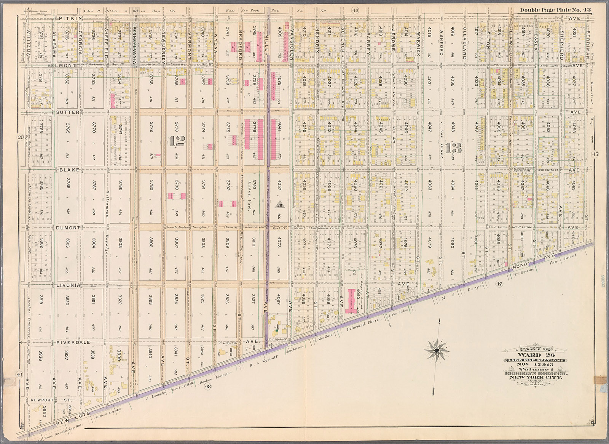
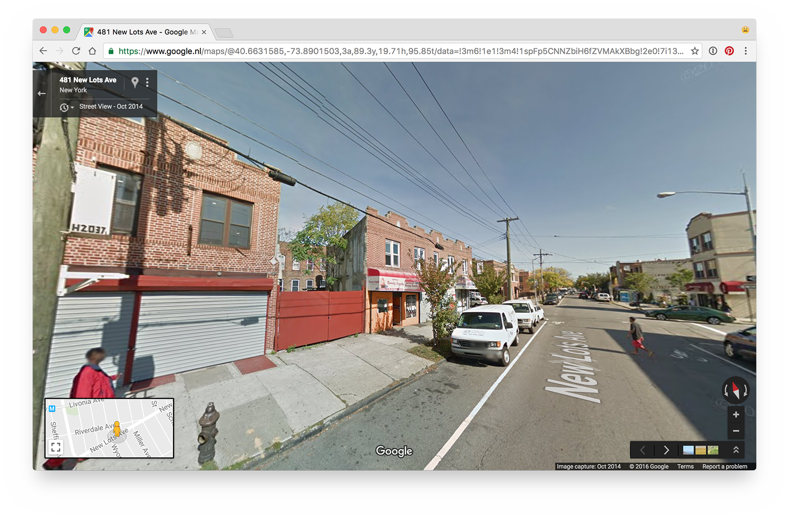
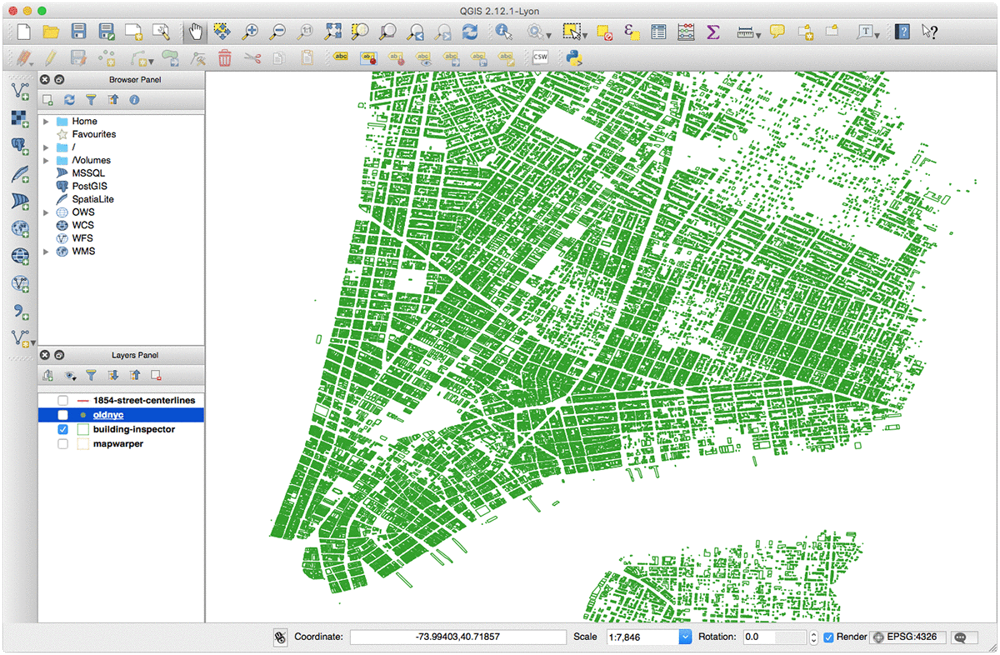

The NYC Space/Time Directory

Main goal: make the Library's collections and NYC's history more accessible
Example 1: Brooklyn's farms


Example 2: cars
First step: the Libary's collection!
Second step: digitization!
Third step: extract data!
Fourth step: combining it all!
NYC Space/Time Directory = NYPL data + external datasets + databases +
APIs + search + geo + RDF + open source + digitization + crowdsourcing + community
Goals: open data, search, open source tools, map viewers
Fifth step: open data + community!

Sixth step: make things!
JAVASCRIPT!
Thanks!